Revealing the Hidden Phytoplankton Layer below the Surface
Satellite-Driven Estimates of Global Chlorophyll Depth Profiles using PACE Hyperspectral Ocean Color Data
Global CHLA Depth Profiles
- Satellite chlorophyll products primarily represent near-surface waters.
- Ecosystems and biogeochemical processes depend on the vertical distribution of chlorophyll-a.
- Vertical structure provides information on:
- Subsurface chlorophyll maxima
- Light–nutrient compensation
- Mixed-layer dynamics and stratification
- At present, there is no global, routinely produced product of global daily CHLA depth profiles.
Why vertical chlorophyll matters
Fisheries
Fish live and eat in layers, not just at the surface.
- Where chlorophyll is determines the food habitat that fish experience (and also oxygen).
- Chlorophyll depth profiles support fisheries modeling and forecasting.
Carbon cycle
ca 50% of global primary production is carried out by ocean phytoplankton
- Where phytoplankton grow affects how much carbon the ocean absorbs.
- Deep chlorophyll maxima can add a lot to total production.
- Better chlorophyll depth profiles improve carbon-cycle models.
Depth profiles estimated from PACE Rrs
In this talk, I will introduce you to an experimental product of CHLA(z), depth profiles, developed using PACE remote-sensing reflectance (Rrs) data. You can access the cloud-optimized dataset as follows. zarr version 3+ required. Use zarr.__version__ to see what you have.
Example
Depth of peak CHLA on March 5, 2024. Red box is where we will make a time series.
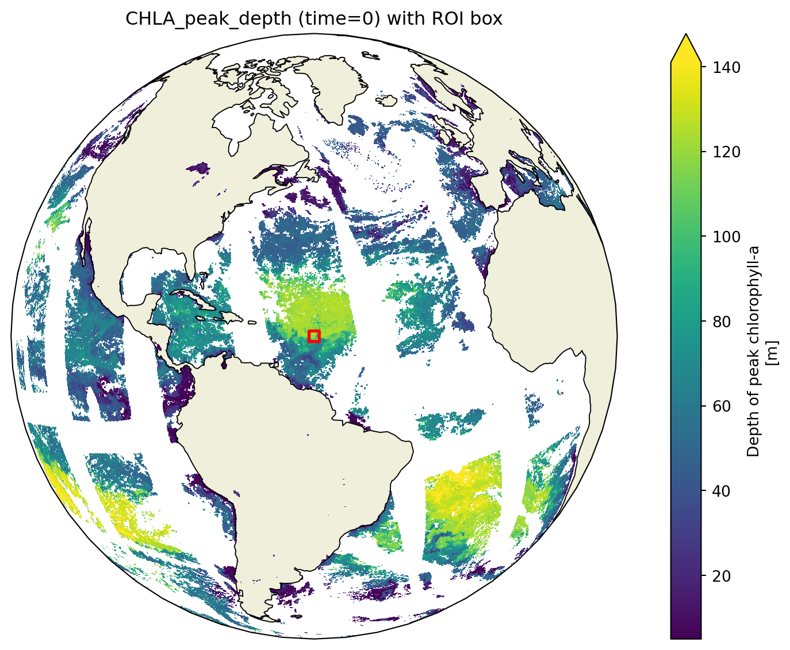
Seasonal patterns of CHLA peak depth
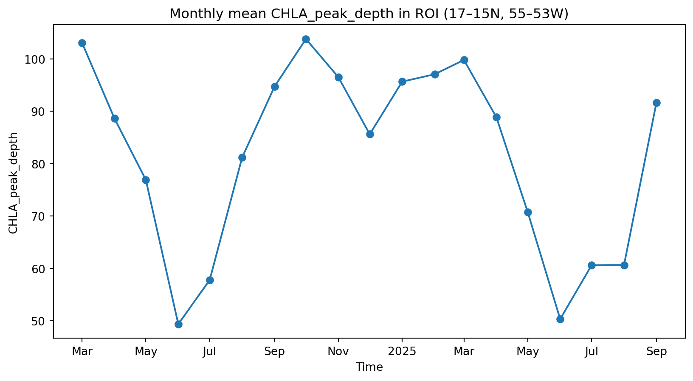
What is remote-sensing reflectance?
Remote-sensing reflectance is the spectral signal of upwelling light emerging from the ocean, formed by depth-integrated absorption and scattering.
Sunlight enters the ocean and then some is absorbed and some is scattered:
- Absorption – water, phytoplankton pigments, and other materials absorb light
- Scattering – molecules and particles redirect light in many directions
The scattered light that escapes the ocean surface carries information from those layers and what is in them.
PACE Mission: Hyperspectral Ocean Color
PACE provides hyperspectral water-leaving radiance reflectances, Rrs(λ), across the visible spectrum.
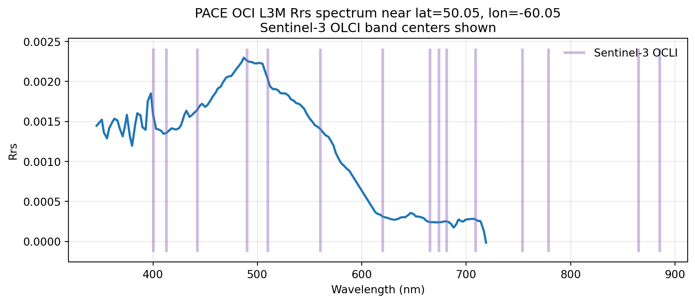
Rrs Contains Subsurface Information
Even though Rrs is light emerging from the ocean surface:
- Photons penetrate the water column and interact with particles at depth.
- Returned Rrs integrates contributions from multiple depths, shaped by inherent optical properties.
- Hyperspectral structure preserves subtle depth-linked signals.
PACE’s spectral richness gives us new power to infer what’s happening at depth.
Results spoiler. It works!
Caveat: Mostly trained on data from open ocean (BGC-Argo). Most data was for surface CHLA < 1. Need more coastal data. Though it does do a decent job for the surface CHLA > 10 data that we do have.

General Approach
- Get CHLA depth (z) profiles from in-situ platforms
- Train CHLA(z) on hyperspectral Rrs using machine learning
- Predict CHLA(z)
- Create daily global maps of CHLA(z) using PACE Rrs daily files
BGC-Argo

In-situ Platforms: BGC-Argo
- Continuous vertical CHLA profiles
- Global
- Deep Water (>1000m) not coastal
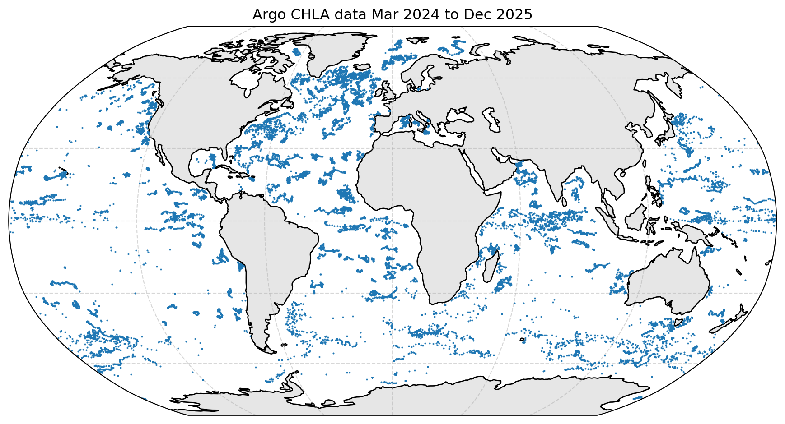
A Chlorophyll Profile from an BGC-Argo Buoy
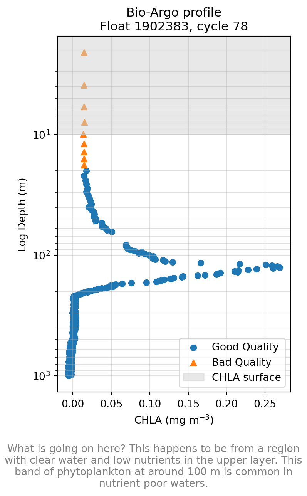
Ocean Observing Initiative (OOI)
- Fixed moorings with fluorometers at discrete depths
- High-frequency CHLA, temperature, salinity
- Key for shallow structure, seasonal cycles, and diel variability
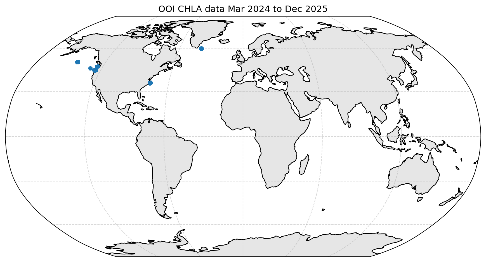
OOI Provides Coastal and Shelf Data

Preparing Data for Training
- Binning
- Matchups to PACE Rrs
Depth Binning in-situ Data (Critical Step)
Raw profiles come at irregular depths → ML models need consistent targets.
- Standardize to bins (e.g., 0–10 m, 10–20 m, …).
- For each profile:
- Interpolate or average CHLA within each bin.
- Keep bins even if other depths are missing.
- Many profiles have partial coverage but still provide useful training data.
👉 This is why we train one BRT per depth bin instead of forcing a single parametric profile shape.
Matching Step: Match in-situ lat/lon/day to PACE Level 3 daily data
- Get Rrs for all 128 wavelengths for every row of data
- Remove any rows with no Rrs. 80% has no Rrs since PACE data is from swaths and is not gap-filled.
- Remove data with that seems to be bio-fouled (sensor issue). Ca 20 rows of data
- Result: 5540 in-situ CHLA depth profiles. Roughly 450 to 700 for each depth bin.
The Modeling Step
- Add on solar_hour to the feature set because that has a big impact on in-situ CHLA estimates
- Add on the type of platform (Argo versus OOI) since those are little different
- Divide the data into training (80%) and testing (20%)
- Fit BRT to the training data
- Evaluate performance using the test data (CHLA depth profiles)
What is a Boosted Regression Tree (BRT)?
- Ensemble of many shallow decision trees
- Each tree learns the residuals of the previous ones (“boosting”)
- Handles:
- Nonlinear relationships
- High-dimensional spectral predictors
- Heterogeneous covariates
- Makes no assumptions about the vertical shape of CHLA profiles.
- I used
sklearnHistGradientBoostingRegressor()function. Standard. Easy.
One BRT Per Depth Bin
Each model predicts CHLA in a single depth range:
- Input:
- Hyperspectral PACE Rrs(λ)
- Extras (solar hour, platform type)
- Hyperspectral PACE Rrs(λ)
- Output:
- CHLA in that bin (e.g., 0–10 m, 10–20 m, …)
Benefits:
- Uses all data because it can use partial profiles (only bins with valid CHLA).
- Avoids imposing a fixed profile shape.
- Enables simple diagnostics: R², RMSE, bias vs depth.
Results
## Load model
bundle = mu.load_ml_bundle("../../models/brt_chla_profiles_bundle.zip")
brt_models = bundle.model
meta = bundle.meta
rrs_cols = meta["rrs_cols"]
chl_cols = meta["y_col"]
extra = meta["extra_cols"]
dataset = bundle.data["dataset"]
train_idx = bundle.data["train_idx"]
test_idx = bundle.data["test_idx"]
X_train = bundle.data["X_train"]
X_test = bundle.data["X_test"]
y_train_all = bundle.data["y_train"]
y_test_all = bundle.data["y_test"]Performance
Overall we see a close match between our predictions and our test data for CHLA in the upper 10m — for non-coastal data.
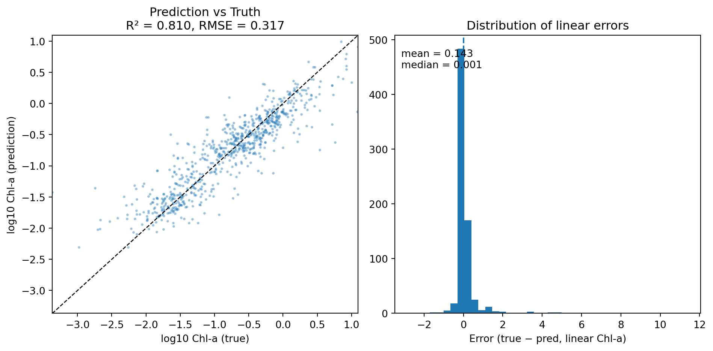
Prediction of CHLA 0 to 10m
Using PACE data for hyperspectral Rrs, we can make a prediction of surface CHLA. Let’s compare to PACE’s surface CHLA product as a first pass check, but note that these are different products trained on different in-situ data. Note surface CHLA is not our goal.
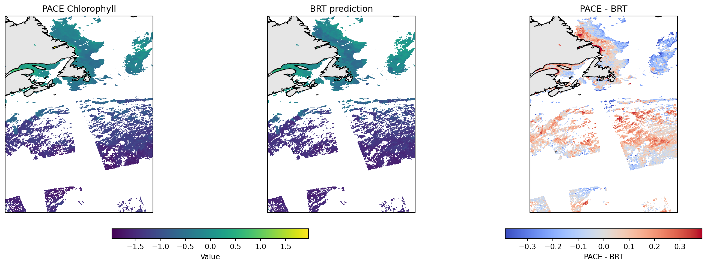
We do not expect these to be identical as the PACE chlor_a is based on the classic Rrs ratio algorithm while the BRT uses the whole spectrum but most importantly was trained on Argo and OOI florometer measurements.
Scatter plot
PACE chlor_a to BRT with type = 1 (ooi) and solar_hour = 0 (midnight)
Notice that at high PACE chlor_a, the BRT model predicts lower CHLA_0_10. We might be able to correct this by using the whole CHLA depth profile (next section).
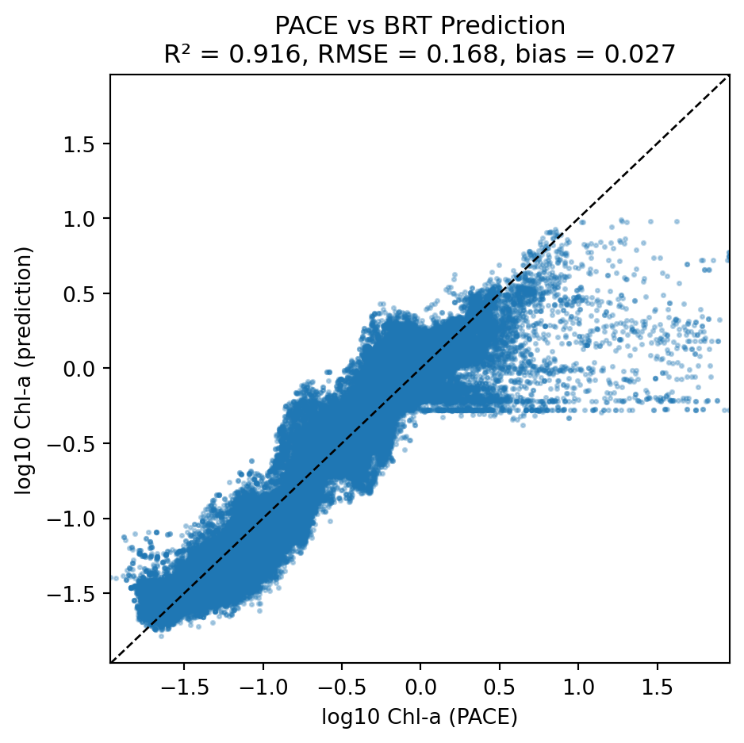
Global prediction
We can do this for the whole globe.

Let’s predict CHLA depth profiles
CHLA Profiles: Observed vs BRT
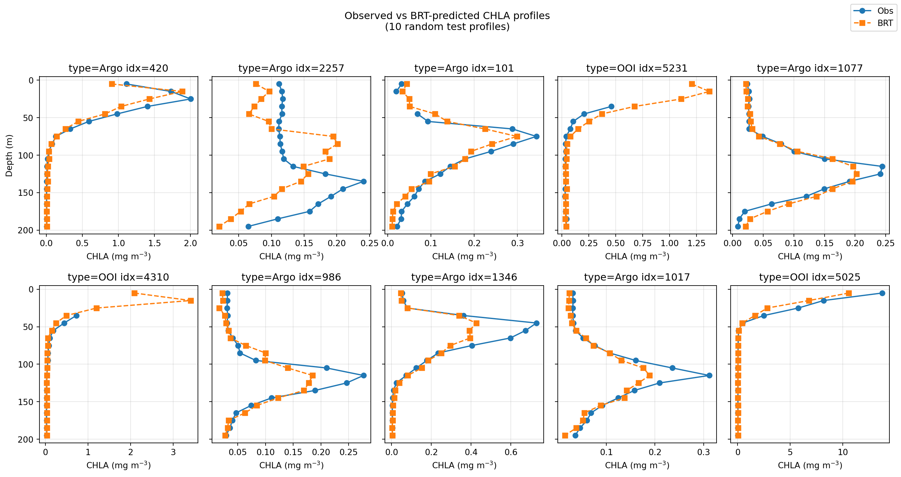
When surface CHLA is high?
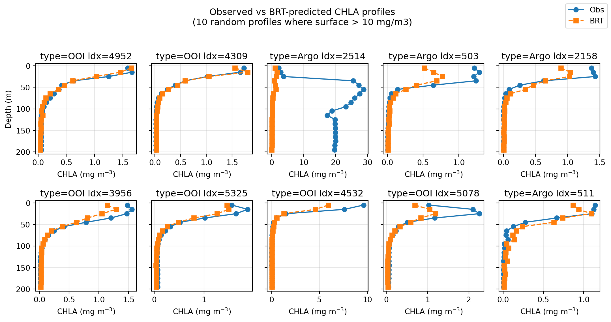
Coastal waters?
Not enough data yet. No correction was done for bathymetry (scattering off bottom), so that will need to be fixed for shallow water.

Depth-wise Metrics for Each Bin
- Errors for depth bin prediction
- Location of peak CHLA
- Height of peak CHLA
- Integrated CHLA from 0 to 200m
Absolute Errors for Depth Bins
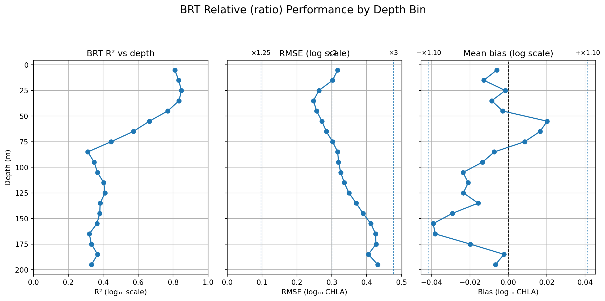
Proportional Errors for Depth Bins

Peak Depth and Integrated CHLA Metrics (Code)
| peak_obs_m | peak_pred_m | peak_error_m | peak_obs_val | peak_pred_val | peak_error_val | int_obs_0_200 | int_pred_0_200 | int_error_0_200 | |
|---|---|---|---|---|---|---|---|---|---|
| 1433 | 45.0 | 65.0 | 20.0 | 0.552569 | 0.269209 | -0.283360 | 60.357637 | 29.869666 | -30.487972 |
| 1200 | 45.0 | 45.0 | 0.0 | 0.422407 | 0.552620 | 0.130213 | 24.065508 | 38.637324 | 14.571816 |
| 4501 | NaN | NaN | NaN | NaN | NaN | NaN | NaN | NaN | NaN |
| 4552 | NaN | NaN | NaN | NaN | NaN | NaN | NaN | NaN | NaN |
| 1867 | NaN | NaN | NaN | NaN | NaN | NaN | NaN | NaN | NaN |
Peak Depth and Height
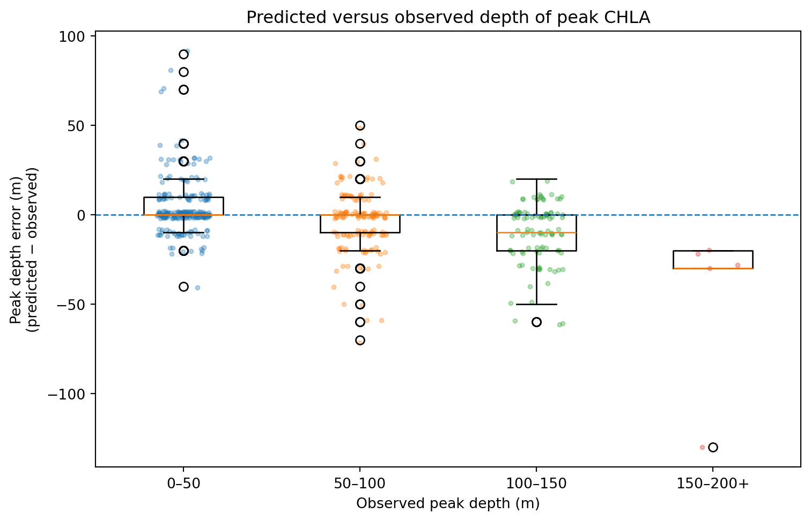
Integrated CHLA (0–200 m)
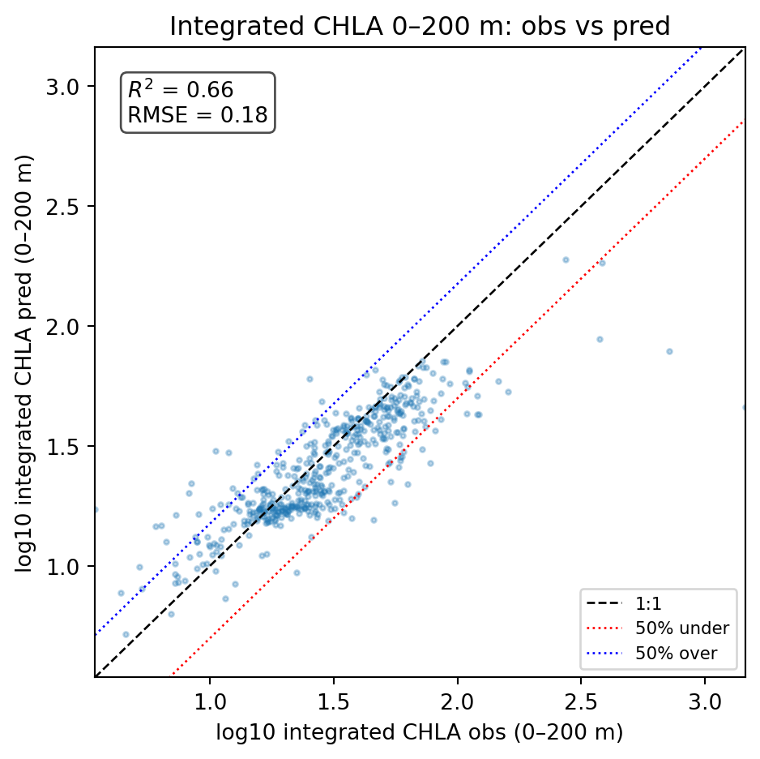
Toward Global Maps of CHLA Profiles
Once the per-depth-bin BRTs are trained:
- Apply them to each PACE pixel with valid Rrs(λ).
- Retrieve a full CHLA profile at each ocean location.
- Derive summary products:
- Integrated CHLA 0–200 m
- Depth of maximum CHLA
- Biomass-weighted mean depth
This moves us toward estimates of global, depth-resolved CHLA density from space.